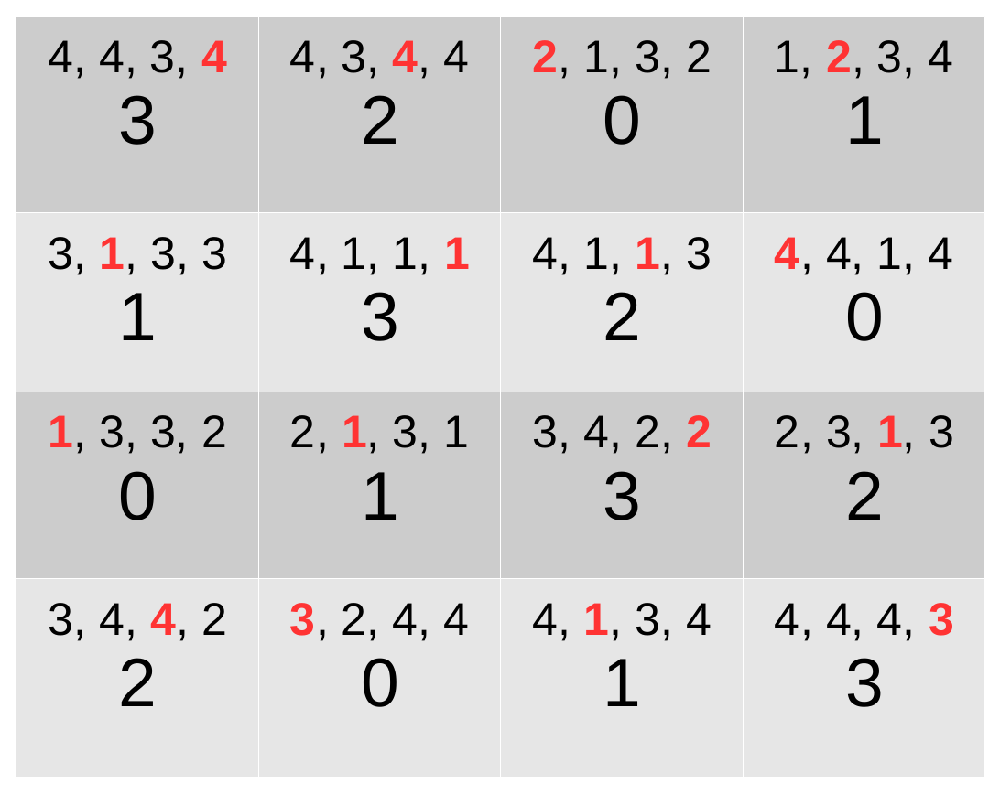

Weighted latin square problem
Brief description
The problem consists in assigning a value from 0 to N-1 to every cell of a NxN chessboard. Each row and each column must be a permutation of N values. For each cell, a random cost in (1…N) is associated to every domain value. The objective is to find a complete assignment where the sum of the costs associated to the selected values for the cells is minimized.
CFN model
We create NxN variables, one for every cell, with domain size N. An AllDifferent hard global constraint is used to model a permutation for every row and every column. Its encoding uses knapsack constraints. Unary cost functions containing random costs associated to domain values are generated for every cell. The worst possible solution is when every cell is associated with a cost of N, so the maximum cost of a solution is N**3, so forbidden assignments have cost k=N**3+1.
Example for N=4 in JSON .cfn format
{
problem: { "name": "LatinSquare4", "mustbe": "<65" },
variables: {"X0_0": 4, "X0_1": 4, "X0_2": 4, "X0_3": 4, "X1_0": 4, "X1_1": 4, "X1_2": 4, "X1_3": 4, "X2_0": 4, "X2_1": 4, "X2_2": 4, "X2_3": 4, "X3_0": 4, "X3_1": 4, "X3_2": 4, "X3_3": 4},
functions: {
{scope: ["X0_0", "X0_1", "X0_2", "X0_3"], "type:" salldiff, "params": {"metric": "var", "cost": 65}},
{scope: ["X1_0", "X1_1", "X1_2", "X1_3"], "type:" salldiff, "params": {"metric": "var", "cost": 65}},
{scope: ["X2_0", "X2_1", "X2_2", "X2_3"], "type:" salldiff, "params": {"metric": "var", "cost": 65}},
{scope: ["X3_0", "X3_1", "X3_2", "X3_3"], "type:" salldiff, "params": {"metric": "var", "cost": 65}},
{scope: ["X0_0", "X1_0", "X2_0", "X3_0"], "type:" salldiff, "params": {"metric": "var", "cost": 65}},
{scope: ["X0_1", "X1_1", "X2_1", "X3_1"], "type:" salldiff, "params": {"metric": "var", "cost": 65}},
{scope: ["X0_2", "X1_2", "X2_2", "X3_2"], "type:" salldiff, "params": {"metric": "var", "cost": 65}},
{scope: ["X0_3", "X1_3", "X2_3", "X3_3"], "type:" salldiff, "params": {"metric": "var", "cost": 65}},
{scope: ["X0_0"], "costs": [4, 4, 3, 4]},
{scope: ["X0_1"], "costs": [4, 3, 4, 4]},
{scope: ["X0_2"], "costs": [2, 1, 3, 2]},
{scope: ["X0_3"], "costs": [1, 2, 3, 4]},
{scope: ["X1_0"], "costs": [3, 1, 3, 3]},
{scope: ["X1_1"], "costs": [4, 1, 1, 1]},
{scope: ["X1_2"], "costs": [4, 1, 1, 3]},
{scope: ["X1_3"], "costs": [4, 4, 1, 4]},
{scope: ["X2_0"], "costs": [1, 3, 3, 2]},
{scope: ["X2_1"], "costs": [2, 1, 3, 1]},
{scope: ["X2_2"], "costs": [3, 4, 2, 2]},
{scope: ["X2_3"], "costs": [2, 3, 1, 3]},
{scope: ["X3_0"], "costs": [3, 4, 4, 2]},
{scope: ["X3_1"], "costs": [3, 2, 4, 4]},
{scope: ["X3_2"], "costs": [4, 1, 3, 4]},
{scope: ["X3_3"], "costs": [4, 4, 4, 3]}}
}
Optimal solution with cost 35 for the latin 4-square example (in red, costs associated to the selected values) :
{kind=link}
Python model
The following code using the pytoulbar2 library solves the weighted latin square problem with the first argument being the dimension N of the chessboard (e.g. “python3 latinsquare.py 6”).
import sys
from random import seed, randint
seed(123456789)
import pytoulbar2
N = int(sys.argv[1])
top = N**3 +1
Problem = pytoulbar2.CFN(top)
for i in range(N):
for j in range(N):
#Create a variable for each square
Problem.AddVariable('Cell(' + str(i) + ',' + str(j) + ')', range(N))
for i in range(N):
#Create a constraint all different with variables on the same row
Problem.AddAllDifferent(['Cell(' + str(i) + ',' + str(j) + ')' for j in range(N)], encoding = 'salldiffkp')
#Create a constraint all different with variables on the same column
Problem.AddAllDifferent(['Cell(' + str(j) + ',' + str(i) + ')'for j in range(N)], encoding = 'salldiffkp')
#Random unary costs
for i in range(N):
for j in range(N):
ListConstraintsUnaryC = []
for l in range(N):
ListConstraintsUnaryC.append(randint(1,N))
Problem.AddFunction(['Cell(' + str(i) + ',' + str(j) + ')'], ListConstraintsUnaryC)
#Problem.Dump('WeightLatinSquare.cfn')
Problem.CFN.timer(300)
res = Problem.Solve(showSolutions = 3)
if res and len(res[0]) == N*N:
# pretty print solution
for i in range(N):
print([res[0][i * N + j] for j in range(N)])
# and its cost
print("Cost:", int(res[1]))
C++ model
The following code using the C++ toulbar2 library API solves the weighted latin square problem.
#include <iostream>
#include <vector>
#include "core/tb2wcsp.hpp"
using namespace std;
// an alias for storing the variable costs
// first dim is the grid rows and second is the columns
typedef std::vector<std::vector<std::vector<Cost>>> LatinCostArray;
/*!
\brief generate random costs for each variable (cell)
*/
void initLatinCosts(size_t N, LatinCostArray& costs) {
// N*N*N values, costs for each cell
costs.resize(N);
for(auto& col: costs) {
col.resize(N);
for(auto& cell: col) {
cell.resize(N);
for(size_t val_ind = 0; val_ind < N; val_ind += 1) {
cell[val_ind] = (rand()%N)+1;
}
}
}
}
/*!
\brief print the costs for each unary variabl (cell)
*/
void printCosts(LatinCostArray& costs) {
for(size_t row_ind = 0; row_ind < costs.size(); row_ind ++) {
for(size_t col_ind = 0; col_ind < costs[row_ind].size(); col_ind ++) {
cout << "cell " << row_ind << "_" << col_ind;
cout << " : ";
for(auto& cost: costs[row_ind][col_ind]) {
cout << cost << ", ";
}
cout << endl;
}
}
}
/*!
\brief fill in a WCSP object with a latin square problem
*/
void buildWCSP(WeightedCSP& wcsp, LatinCostArray& costs, size_t N, Cost top) {
// variables
for(size_t row = 0; row < N; row ++) {
for(unsigned int col = 0; col < N; col ++) {
wcsp.makeEnumeratedVariable("Cell_" + to_string(row) + "," + to_string(col), 0, N-1);
}
}
cout << "number of variables: " << wcsp.numberOfVariables() << endl;
/* costs for all different constraints (top on diagonal) */
vector<Cost> alldiff_costs;
for(unsigned int i = 0; i < N; i ++) {
for(unsigned int j = 0; j < N; j ++) {
if(i == j) {
alldiff_costs.push_back(top);
} else {
alldiff_costs.push_back(0);
}
}
}
/* all different constraints */
for(unsigned int index = 0; index < N; index ++) {
for(unsigned int var_ind1 = 0; var_ind1 < N; var_ind1 ++) {
for(unsigned int var_ind2 = var_ind1+1; var_ind2 < N; var_ind2 ++) {
/* row constraints */
wcsp.postBinaryConstraint(N*index+var_ind1, N*index+var_ind2, alldiff_costs);
/* col constraints */
wcsp.postBinaryConstraint(index+var_ind1*N, index+var_ind2*N, alldiff_costs);
}
}
}
/* unary costs */
size_t var_ind = 0;
for(size_t row = 0; row < N; row ++) {
for(size_t col = 0; col < N; col ++) {
wcsp.postUnaryConstraint(var_ind, costs[row][col]);
var_ind += 1;
}
}
}
int main() {
srand(123456789);
size_t N = 5;
Cost top = N*N*N + 1;
// N*N*N values, costs for each cell
LatinCostArray objective_costs;
// init the costs for each cell
initLatinCosts(N, objective_costs);
cout << "Randomly genereated costs : " << endl;
printCosts(objective_costs);
cout << endl;
tb2init();
ToulBar2::verbose = 0;
WeightedCSPSolver* solver = WeightedCSPSolver::makeWeightedCSPSolver(top);
// fill in the WeightedCSP object
WeightedCSP* wcsp = solver->getWCSP();
buildWCSP(*wcsp, objective_costs, N, top);
bool result = solver->solve();
if(result) {
Cost bestCost = solver->getSolutionValue();
Cost bestLowerBound = solver->getDDualBound();
if(!ToulBar2::limited) {
cout << "Optimal solution found with cost " << bestCost << endl;
} else {
cout << "Best solution found with cost " << bestCost << " and best lower bound of " << bestLowerBound << endl;
}
// retrieve the solution
std::vector<Value> solution = solver->getSolution();
cout << endl << "Best solution : " << endl;
for(size_t var_ind = 0; var_ind < solution.size(); var_ind ++) {
cout << solution[var_ind] << " ; ";
if((var_ind+1) % N == 0) {
cout << endl;
}
}
} else {
cout << "No solution has been found !" << endl;
}
delete solver;
return 0;
}